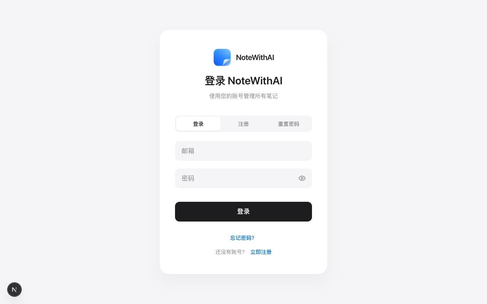
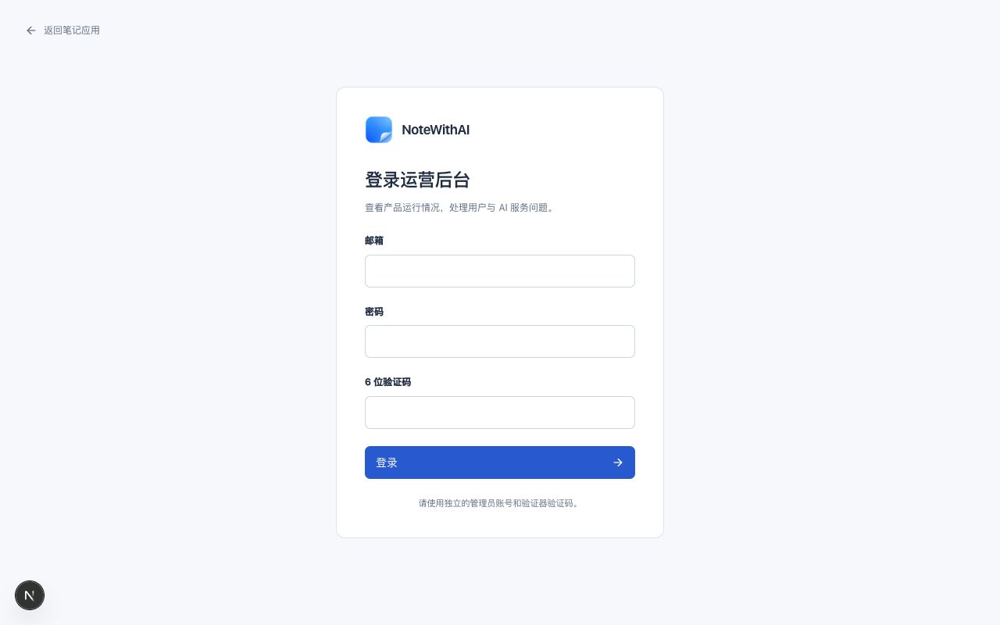

NoteWithAI · 蓝色折页品牌（2026-11-09 刷新）
按用户提供的 1254×1254 渲染稿换新：去掉白色背景与投影，得到透明 PNG 母版，再生成界面与浏览器标签页所需的全部图标。下方资源全部是仓库内实际文件。
NoteWithAI
16px
24px
32px
48px
NoteWithAI
16px
24px
32px
48px
Apple Touch Icon / 透明 PNG
App Router 文件式图标
标签页：frontend/src/app/favicon.ico（16/32/48px）
PNG：frontend/src/app/icon.png（192px）
Apple：frontend/src/app/apple-icon.png（180px）
界面：frontend/public/brand/icon-192.png


仅本地验收记录：真实页面截图来自本地开发服务（Next dev，1280×800）；线上发布后固定路径 favicon.ico 可能被浏览器长期缓存，需要关闭旧标签页或强制刷新。